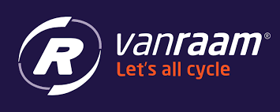

De minor bestaat uit workshops ter introdcutie van Smart Industry. Deze workshops werden de eerste 6 weken gegeven. In de 14 opvolgende
weken konden wij onze opgedane kennis toepassen in een project die wij bij een bedrijf mochten uitvoeren. Na een pitch van meerdere bedrijven
is mijn keus gevallen op "Van Raam". Samen met Daan Hendriksen mocht ik 14 weken invulling geven aan de opdracht die Van Raam aangeboden heeft.
Van Raam is een fietsfabrikant gespecialiseerd in het produceren van aangepaste fietsen. Ze richten zich op het maken van driewielfietsen,
scootmobielfietsen, tandems, duo-fietsen, rolstoelfietsen, rolstoeltransportfietsen, en lage instapfietsen. Al deze fietsen zijn
tegenwoordig ook verkrijgbaar als elektrische fiets.

In de montage cel bij Van Raam wordt de fiets order-specifiek geassembleerd. Tijdens en na de assemblage van de fiets worden
er kwaliteitscontroles uitgevoerd. Deze zijn voor een deel digitaal aangestuurd, voor een deel analoog (papier) en voor een
deel op gevoel. Zo wordt er in de montagelijn bij elke volgende stap gecontroleerd of de voorgaande medewerker alles volgens
specificaties heeft uitgevoerd.
Er is momenteel slechts een beperkte mogelijkheid tot analyse van het proces, de verzamelde data en de kwaliteit als geheel.
Het lerend en corrigerend vermogen van de medewerkers en de organisatie wordt hierdoor onvoldoende ondersteund, waardoor er
onnodig veel verstoringen blijven bestaan of te laat worden gesignaleerd.
Het doel van de opdracht is om door middel van inzet van data in de montage cel ‘first time right’ te faciliteren. De KAM medewerker
en de Manager Operations van de montage cel zijn de belangrijkste stakeholders. Vanuit de afdeling Informatiemanagement zijn Data en
Proces Analisten beschikbaar ter ondersteuning en begeleiding van de opdracht. Deze opdracht is een vervolgopdracht binnen het Field
Lab Digital Twin. Het voorliggende onderzoek en adviesrapport kan als onderligger gebruikt worden voor de uitvoering van deze opdracht.
Om de opdracht duidelijk te krijgen zijn we in gesprek gegaan met onze begeleider Eric Drost. Hij heeft ons van meer informatie voorzien waardoor
wij in staat waren om een "Plan van Aanpak" te schrijven. Eerst hebben we de montagehal eens bekeken en zijn we in gesprek gegaan met medewerkers om
een idee te krijgen wat ons vertrekpunt is. Met deze informatie in ons achterhoofd zijn we een plan van aanpak gaan realiseren waarin we de projectscoop
gekaderd hebben.
We hebben, om structuur te krijgen, het project verdeeld in 3 fases:
- 1: Analyseren hoe er in de huidige situatie met kwaliteitscontroles omgegaan wordt
- 2: Inventariseren wat de gewenste situatie is
- 3: Een advies opstellen hoe de gewenste situatie gerealiseerd kan worden
Na het afronden van een fase zullen wij deze presenteren aan de stakeholders. Hierdoor zorgen wij voor tussentijdse terugkoppeling, waarin feedback gegeven
kan worden. Door dit tussentijds te doen blijven we flexibel in het verwerken van aanpassingen. We zijn dus "Agile" gaan werken.
Iedere fase hebben wij uitgewerkt in deel vragen die uiteindelijk gezamenlijk antwoord moeten geven op de hoofdvraag :
"Hoe kan doormiddel van digitalisering de kwaliteitscontrole teruggekoppeld worden om het proces en product te
verbeteren?"
Tijdens de analyse fase zijn we verder in gegaan op de huidige situatie. Hierin hebben we vragen beantwoord als:
- Wie zijn de stakeholders
- Welke afdelingen zijn er binnen de montage
- Hoe wordt de kwaliteit gewaardborgd
- Welke informatie (data) is nodig om de kwaliteit te waarborgen
Tevens hebben wij een analyse gemaakt van de huidige workflow in de montage hal. Hievoor hebben wij de route die een fiets aflegd gevolgd
en verwerkt tot een een workflow.
We hebben 2 soorten flow uitgewerkt. Dit is een 'first time right' flow, dus wanneer de fiets zonder montagefouten geproduceerd is en we hebben
een unhappy flow, wanneer de fiets tijdens het montage proces tekort is gekomen. Hieronder zijn de 2 workflows in een uitgewerkt schema te zien:
Gewenste situatie & Hoe te realiseren
In het plan van aanpak hadden we bedacht na de analyse fase over te gaan naar in kaart brengen wat de gewenste situatie is. Echter
hebben wij na het presenteren van de analyse fase al en door dat we meerdere malen verschillende stakeholders en mederwerkers hebben gesproken
al een aardig beeld van wat de gewenste situatie is. Hiertoe hebben wij besloten, om de fase waarin wij de gewenste situatie in kaart brengen en de
fase waarin wij toe lichten hoe dit te realiseren, gelijk te laten lopen. Het voornaamste voordeel hiervan is dat wij tijdens het realiseren met
voorbeelden en uitwerkingen terug konden naar stakeholders en mederwerkers om zo met een visueel beeld te komen hoe het eruit kan komen te zien.
Doordat dat een visuele uitwerking veel meer spreekt was het veel eenvoudiger voor de stakeholders om feedback te geven. Deze feedback konden wij dan
eenvoudig verwerken en met het nieuwe resultaat weer terugkoppelen. Zo doende hebben we nauw samengewerkt met de eindgebruikers en hierdoor een eind resultaat
neer kunnen zetten die goed aansluit bij de verwachten en de wensen.
Enkele uitwerkingen van het resultaat zijn hieronder te vinden:
Het invoerscherm: in de huidige situatie gebeurde dit op papier. Nu kan dit via een digitaal scherm.
Dashboard: In de huidige situatie beschikken ze niet over een Dashboard, omdat de informatie niet digitaal wordt ingevoerd.
In dit Dashboard worden KPI's weergegeven die belangrijk zijn voor de montagehal. Hierin kan de actuele status van een KPI afgelezen worden
en zo nodig op gestuurd worden.
Hieronder is een Dashboard te zien die weer geeft wat de status is van de lijn montage en hoe zei presteren.

In dit Dashboard is een track&trace scherm te zien. De wens vanuit de stakeholders was er om op fiets niveau de status te hebben.
Dit hebben wij uitgewerkt in dit scherm.